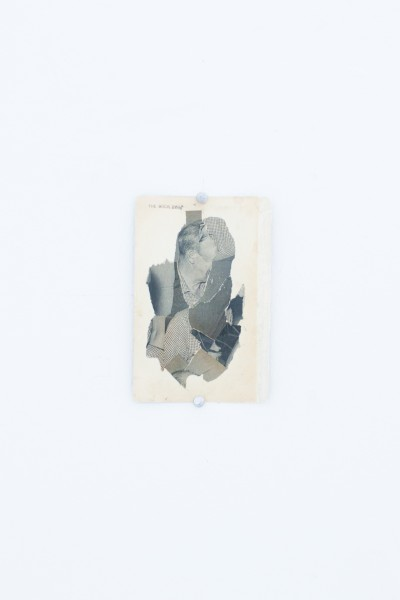
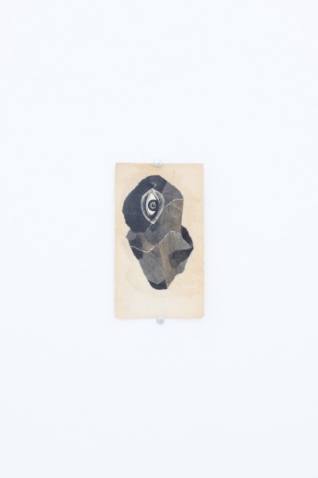

-
As Pretty As I Feel : A Conversation with Mario Zoots
by Monica Uszerowicz August 29, 2012
Denver-based Mario Zoots’ collages exist in a dreamlike reality: faces and shapes are reformed, their individual parts becoming cleverly hidden or exposed until they coagulate into something entirely transformative. The viewing experience can be disorienting, which in itself implicates Zoots’ belief that there is a presupposed psychology and ideology inherent in images. It is his intention, it seems, to distort that language, ultimately reappropriating it and raising questions about how — and why — it exists. Ideas regarding the Internet and the fetishism of its exigencies — and the ways in which both have reformatted typical modes of thinking — have seeped into Zoots’ recent work via digital images and manipulation. The result: the aforementioned dreamy quality of his work becomes curiously juxtaposed to its roots, which is more hyper-cerebral than whimsical.Polymathic to the core — he is one-half of art and music collective Modern Witch — Zoots’ foray beyond small print zines and into galleries has produced works more inherently introspective than before, as the placement of his pieces in visceral print form ultimately complicates them. The accompanying description to his upcoming exhibition at Mexico City’s Preteen Gallery, ‘I JUST WANNA BE AS PRETTY AS I FEEL,’ is a collaboration with Preteen’s curator, Gerardo Contreras, and discusses the exploration of notions about hallucination and the existence of the self, appropriately manifested in Zoots’ new, psychedelic collages. We discussed over e-mail the details of both the show and his earlier work.
Monica Uszerowicz: When did you start making work? I’m hoping you can think as far back as your childhood for this, and explain your eventual transition to collage.
Mario Zoots: As a child, I used to draw mazes. My mother told me that I would sit at the table and stare at these drawings and spend a lot of time making complex tunnels on paper. I think this is something that I have carried into what I do now, being totally obsessed with repetition. The years leading up to collage were filled with studies of typography as hieroglyphs, using the spray can as scalpel.
The first collages were made in 2007, a friend of mine showed me his process and introduced me to Best-Test rubber cement. For the last six years I have been very active with my collage practice, physical and digital. In 2009 I became interested in NetArt. Around this time I stopped producing physical work; I wanted my imagery to only be viewed online. I was obsessed with immateriality. Time went by, and now I am back to making physical collage objects again.

MU: In your own words, you are “engaged in the excavation, re-imagination and manipulation of contemporary culture.” Can you discuss your personal take on the importance of media figures — and the visual depictions of them — as symbolic language for our culture?
MZ: Contemporary life is a series of images that repeat themselves again and again. My immediate surroundings inspire my work; it’s a simple formula. Have you ever been in line at a grocery store and noticed all the gossip magazines in the stands before the register? Globe, InTouch, Star Magazine. Big, bold letters: “J-LO BETRAYED!” Images of Tom Cruise and Angelina Jolie. It’s image, text, and color all working together. It’s beautifully disgusting, a complete ready-made in my opinion. I want to enlarge these magazine covers by 900% and hang them in public places.
MU: I understand you’ve taken an interest in exploring these same concepts as applied to the Internet, to the “Tumblr generation.” I feel like the cyber world has reworked our general mode of thinking. How does your appropriation and re-appropriation of contemporary culture extend to the Internet?
MZ: The Internet allows me the freedom to work at a fast pace. I like working through multiple ideas at once and going back and forth between using images found on the Internet and those in magazines and books in my studio. But even with the works I make completely analog I really enjoy viewing on a screen; the Internet browser is the perfect frame sometimes.
MU: In the description for your latest show, ‘I JUST WANNA BE AS PRETTY AS I FEEL,’ you reference Daniel Lagache’s notion of auditory hallucinations. His take on them: it is the result of an alienation of speech which gives rise to philosophical questions about the source of the voice. It’s usually the self’s own voice — its body specifically — and this touches upon the question of existence, self-awareness. You mention “the horrors of consciousness,” of memory, of being. How does your newest set of work address this kind of question of being and existence?
MZ: ‘I JUST WANNA BE AS PRETTY AS I FELL’ is a collaboration with the director of PRETEEN GALLERY, Gerardo Contreras. Gerardo has created a written piece that describes the show and he has also chosen specific collage works of mine made during 2012. In this show I am exhibiting four works on paper using source material found between 1967 and 1969. These collages are black and white and are made on the insides of 1960s science fiction book covers. For the most part, I have only shared these collages online through sites like Flickr and Instagram. People are always surprised to see how small they actually are. When viewed online you can see every detail and blemish. In real life, they feel and look different.
Together we have married language and image to create a psychotic exhibition in Mexico City. Gerardo touches on themes of psychology and hallucination in his writing via the theories of Daniel Lagache. I think his interpretation and deconstruction of the work is interesting and it works well. It made me view this collage series in a whole new way. My work is always experimental — I make images and leave it up to the viewer to complete it in however they see fit.
MU: You once said, “When I change images, I believe the psychology of the image is still intact…but then I find the disruptions and interruptions in my art to be haunting and mysterious.” I’m wondering if you can elaborate on that. In popular media and images in general, there is a deeply-embedded language and meaning and thus a particular psychology. How does your rendering them mysterious alter their meaning, if at all?
MZ: Obscuring and interrupting the embedded psychology of an image creates mystery. When viewing an object or image, I take everything I know about it from memory and try to make sense of what I am looking at. I believe the viewer can experience the same process. The interruptions in my work, most times crude, are haunting because they question motive. Why would you remove the focal point of an image? What am I supposed to be looking at? You tell me.
MU: Is one of your goals to make the viewer feel a sense of detachment from the original image, as the image itself has literally become displaced? This reminds me of the aforementioned displaced auditory hallucinations. In what ways does your alteration affect the viewer’s perception?
MZ: Detachment, uneasiness and sensations of the uncanny are the themes I work under. Living in an age of chaos, collage takes the excess scraps of post-culture and tries to make some sort of sense or confusion of it, my work being the second. Appropriation to me means creating a new world within an existing one. Each viewer takes away something different. My goal is to dissociate the familiar.
MU: One of your earlier pieces — a repeated, deconstructed image of Elizabeth Taylor — got me thinking about how the image itself was probably extracted from the Internet. You can see an “original copy” of something online, but it’s never a solid image, and this is just inherently understood. How does an image’s placement in this sort of “cyber reality” affect its presentation? How did that piece come about?

MZ: I made the piece ‘Trance End’, the day after I read about Liz Taylor’s death on the Internet. The way I found that particular image was through an image search I did on google. I searched for ‘Liz Taylor’ larger than 10mp (3648×2736). I found an intense black and white portrait of a young Liz Taylor. I made fifteen 24×36 prints of this celebrity headshot; I also made a smaller version that could circulate tumblr. There are so many copies of copies online and in the real world. The original now comes second to the multiple in contemporary society.
MU: Shifting gears a bit: you’re also a musician. Is expressing yourself or an idea via music more fulfilling in any way? In what ways does music satisfy you (in ways visual art does not)?
MZ: Performing late in the night at a stinky underground club with a crowd dancing to our music is one of my favorite things to do. I feel that my music can reach a much more diverse audience than any of my art could. I’ve created so many works things that exist online, and you have to be privileged enough to have a computer with the Internet to experience them. However, bringing people from all backgrounds together for a celebration of being alive is a real powerful feeling; it’s these experiences IRL [in real life] that I value most.
MU: Through the stylings of Modern Witch and your own visual work, I’ve become curious about your interest in the occult, in magic and spirituality. Can you tell me about this? Is it correct to assume this is a genuine interest of yours?
MZ: Modern Witch is a project that allows me to explore themes of the Occult and Ritual. It’s a fascination and longing viewed from afar. I am not a practicing occultist; it’s more of an aesthetic interest of mine. Modern Witch is techno-spiritual. We repeat technique and theme in a ritualistic way through audio recording and related artwork, all the while using Internet technology as the main vehicle for distribution of this media. A goal at the time was to make the visual elements just as important as the audio.
The word “occult” means hidden, and at the beginning of this project that is what our intentions were: to remain anonymous to a certain extent. We had a heavy online presence, but there was no information on who was making the music and art. We kept releasing music videos on Youtube and music through our Myspace page; we gained a following through this mysteriousness. Eventually that all changed.
all images are installation shots of ‘MARIO ZOOTS: I JUST WANNA BE AS PRETTY AS I FEEL’ courtesy of PRETEEN GALLERY, Mexico City